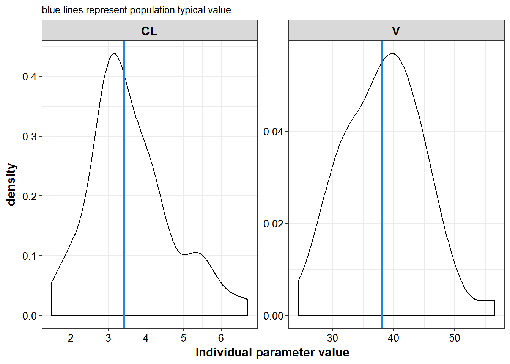
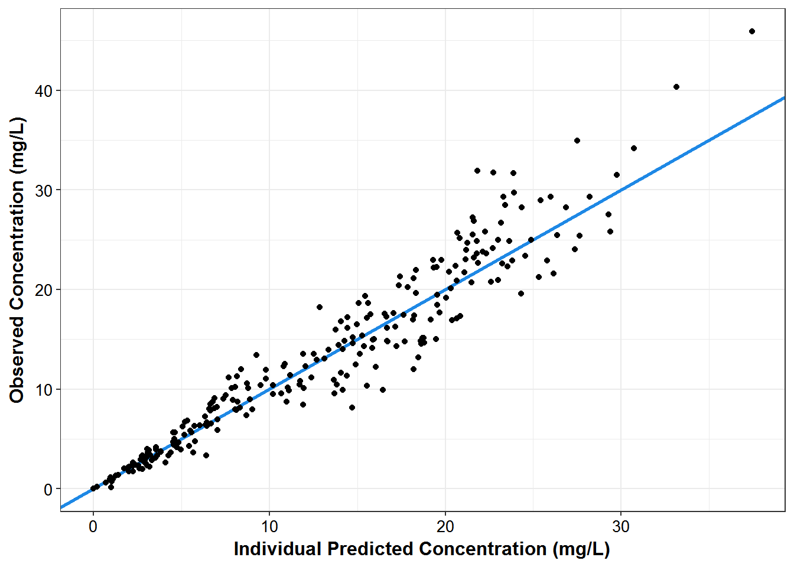
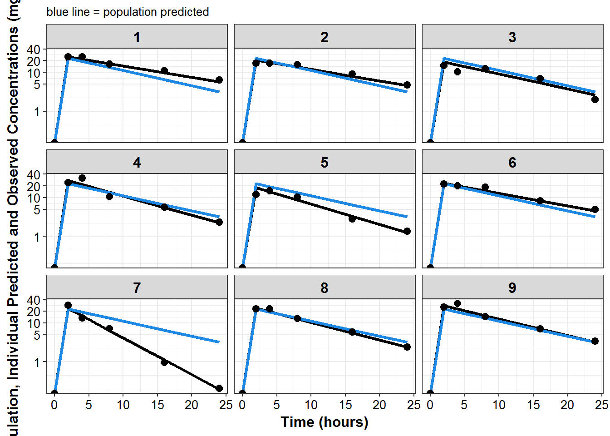
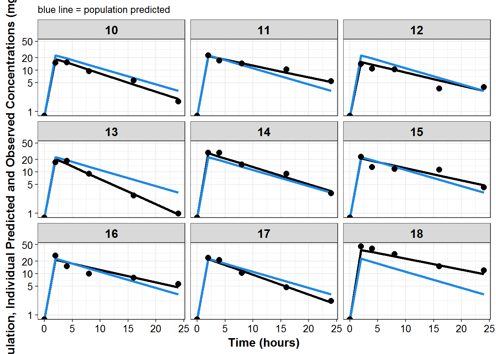
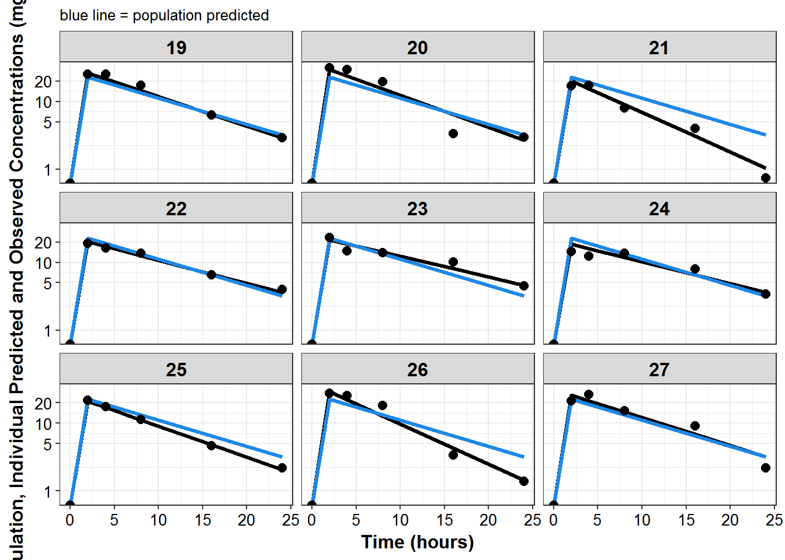
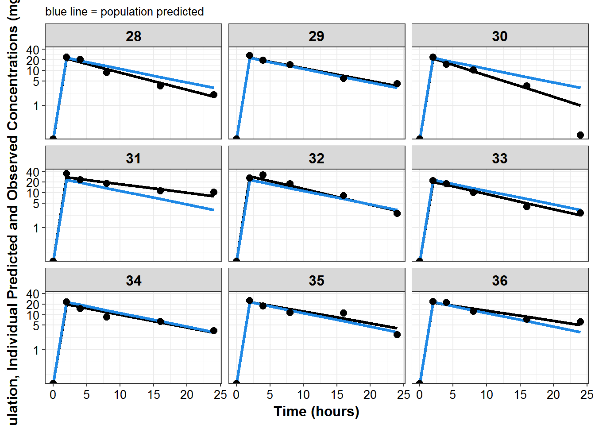
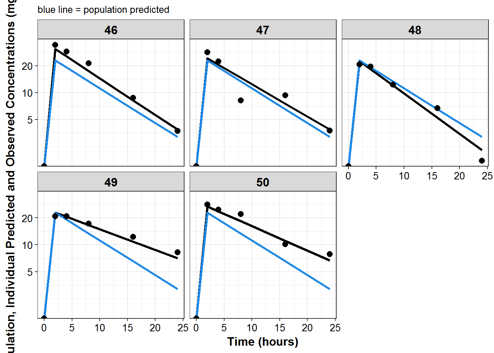

2 NONMEM output
2.1 FOCE output
library(knitr)
library(PKPDmisc)
library(tidyverse)
library(decorator)pallete <- Pallete$new("material_design")
mcp <- pallete$colors() sdtab1 <- read_nonmem("../modeling/sdtab001")
patab1 <- read_nonmem("../modeling/patab001")2.1.1 Output previews
kable(head(sdtab1))| ID | TIME | IPRED | DV | CWRES | PRED |
|---|---|---|---|---|---|
| 1 | 0 | 0.00 | 0.00 | 0.000 | 0.00 |
| 1 | 2 | 24.88 | 24.96 | 0.039 | 22.94 |
| 1 | 4 | 21.79 | 24.87 | 0.750 | 19.17 |
| 1 | 8 | 16.70 | 16.14 | 0.073 | 13.39 |
| 1 | 16 | 9.81 | 11.03 | 0.912 | 6.53 |
| 1 | 24 | 5.77 | 6.33 | 0.783 | 3.18 |
kable(head(patab1))| ID | CL | V | TVCL | TVV | nCL | nV |
|---|---|---|---|---|---|---|
| 1 | 2.42 | 36.4 | 3.42 | 38.1 | -0.347 | -0.047 |
| 2 | 2.99 | 43.2 | 3.42 | 38.1 | -0.135 | 0.126 |
| 3 | 4.20 | 47.1 | 3.42 | 38.1 | 0.204 | 0.211 |
| 4 | 3.50 | 30.8 | 3.42 | 38.1 | 0.024 | -0.213 |
| 5 | 5.55 | 45.9 | 3.42 | 38.1 | 0.484 | 0.185 |
| 6 | 2.82 | 38.0 | 3.42 | 38.1 | -0.195 | -0.003 |
2.1.2 Visual summaries
2.1.2.1 Parameter values
patab1 %>%
select(ID:TVV) %>%
gather(iparam, value, CL, V) %>%
mutate(TVP = ifelse(iparam == "CL", TVCL, TVV)) %>%
ggplot(aes(x = value, group = iparam)) +
geom_density() +
geom_vline(aes(xintercept = TVP), color = mcp$blue, size = 1.2) +
facet_wrap(~iparam, scales = "free") + theme_bw() +
base_theme() +
labs(x = "Individual parameter value", subtitle="blue lines represent population typical value")
2.1.2.2 Individual diagnostic plots
sdtab1 %>%
filter(TIME >0) %>%
ggplot(aes(x = TIME, y = CWRES)) + geom_point() +
geom_smooth(se = FALSE, color = mcp$blue) +
theme_bw() +
base_theme() +
geom_smooth(aes(y = abs(CWRES)), se = F, color = mcp$red) +
geom_smooth(aes(y = -abs(CWRES)), se = F, color = mcp$red)
#> `geom_smooth()` using method = 'loess'
#> `geom_smooth()` using method = 'loess'
#> `geom_smooth()` using method = 'loess'
sdtab1 %>%
ggplot(aes(x = IPRED, y = DV)) +
geom_abline(color = mcp$blue, size = 1.1) +
geom_point() +
theme_bw() +
base_theme() +
labs(x = "Individual Predicted Concentration (mg/L)",
y = "Observed Concentration (mg/L)")
plot_list <- sdtab1 %>%
mutate(PNUM = ids_per_plot(ID)) %>%
split(.$PNUM) %>%
map(~
ggplot(., aes(x = TIME, y = IPRED, group = ID)) +
geom_line(size = 1.1) +
geom_line(aes(y = PRED), size = 1.1, color = mcp$blue) +
geom_point(aes(y = DV), size = 2.5) + facet_wrap(~ID) +
theme_bw() +
base_theme() +
labs(y = "Population, Individual Predicted and Observed Concentrations (mg/L)",
x = "Time (hours)",
subtitle = "blue line = population predicted"
) +
scale_y_log10(breaks = c(1, 5, 10, 20, ceiling(max(.$DV)/10)*10))
)
print_plots(plot_list)





#> [[1]]
#> NULL
#>
#> [[2]]
#> NULL
#>
#> [[3]]
#> NULL
#>
#> [[4]]
#> NULL
#>
#> [[5]]
#> NULL
#>
#> [[6]]
#> NULLsession_details <- devtools::session_info()
session_details$platform
#> setting value
#> version R version 3.3.2 (2016-10-31)
#> system x86_64, mingw32
#> ui RTerm
#> language (EN)
#> collate English_United States.1252
#> tz America/New_York
#> date 2016-12-09
knitr::kable(session_details$packages)| package | * | version | date | source |
|---|---|---|---|---|
| assertthat | 0.1 | 2013-12-06 | CRAN (R 3.3.2) | |
| backports | 1.0.4 | 2016-10-24 | CRAN (R 3.3.2) | |
| bookdown | 0.2 | 2016-11-12 | CRAN (R 3.3.2) | |
| codetools | 0.2-15 | 2016-10-05 | CRAN (R 3.3.2) | |
| colorspace | 1.2-7 | 2016-10-11 | CRAN (R 3.3.2) | |
| DBI | 0.5-1 | 2016-09-10 | CRAN (R 3.3.2) | |
| decorator | * | 0.0.1 | 2016-12-09 | local |
| devtools | 1.12.0 | 2016-06-24 | CRAN (R 3.3.2) | |
| digest | 0.6.10 | 2016-08-02 | CRAN (R 3.3.2) | |
| dplyr | * | 0.5.0 | 2016-06-24 | CRAN (R 3.3.2) |
| evaluate | 0.10 | 2016-10-11 | CRAN (R 3.3.2) | |
| ggplot2 | * | 2.1.0.9001 | 2016-11-07 | Github (hadley/ggplot2@70c3d69) |
| gtable | 0.2.0 | 2016-02-26 | CRAN (R 3.3.2) | |
| highr | 0.6 | 2016-05-09 | CRAN (R 3.3.2) | |
| htmltools | 0.3.5 | 2016-03-21 | CRAN (R 3.3.2) | |
| httpuv | 1.3.3 | 2015-08-04 | CRAN (R 3.3.2) | |
| knitr | * | 1.15 | 2016-11-09 | CRAN (R 3.3.2) |
| labeling | 0.3 | 2014-08-23 | CRAN (R 3.3.2) | |
| lazyeval | 0.2.0 | 2016-06-12 | CRAN (R 3.3.2) | |
| magrittr | 1.5 | 2014-11-22 | CRAN (R 3.3.2) | |
| memoise | 1.0.0 | 2016-01-29 | CRAN (R 3.3.2) | |
| mime | 0.5 | 2016-07-07 | CRAN (R 3.3.2) | |
| miniUI | 0.1.1 | 2016-01-15 | CRAN (R 3.3.2) | |
| munsell | 0.4.3 | 2016-02-13 | CRAN (R 3.3.2) | |
| PKPDmisc | * | 0.4.4.9000 | 2016-11-02 | Github (dpastoor/PKPDmisc@beae2a6) |
| plyr | 1.8.4 | 2016-06-08 | CRAN (R 3.3.2) | |
| purrr | * | 0.2.2 | 2016-06-18 | CRAN (R 3.3.2) |
| R6 | 2.2.0 | 2016-10-05 | CRAN (R 3.3.2) | |
| Rcpp | 0.12.8 | 2016-11-17 | CRAN (R 3.3.2) | |
| readr | * | 1.0.0 | 2016-08-03 | CRAN (R 3.3.2) |
| rmarkdown | 1.2 | 2016-11-21 | CRAN (R 3.3.2) | |
| rprojroot | 1.1 | 2016-10-29 | CRAN (R 3.3.2) | |
| scales | 0.4.0.9003 | 2016-11-07 | Github (hadley/scales@d58d83a) | |
| shiny | 0.14.2 | 2016-11-01 | CRAN (R 3.3.2) | |
| stringi | 1.1.2 | 2016-10-01 | CRAN (R 3.3.2) | |
| stringr | 1.1.0 | 2016-08-19 | CRAN (R 3.3.2) | |
| tibble | * | 1.2 | 2016-08-26 | CRAN (R 3.3.2) |
| tidyr | * | 0.6.0 | 2016-08-12 | CRAN (R 3.3.2) |
| tidyverse | * | 1.0.0 | 2016-09-09 | CRAN (R 3.3.2) |
| withr | 1.0.2 | 2016-06-20 | CRAN (R 3.3.2) | |
| xtable | 1.8-2 | 2016-02-05 | CRAN (R 3.3.2) | |
| yaml | 2.1.13 | 2014-06-12 | CRAN (R 3.3.2) |